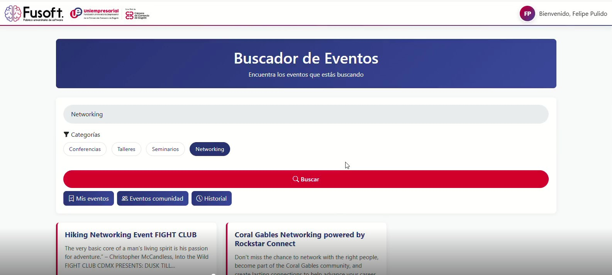
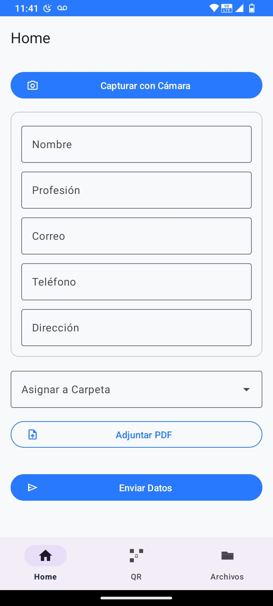
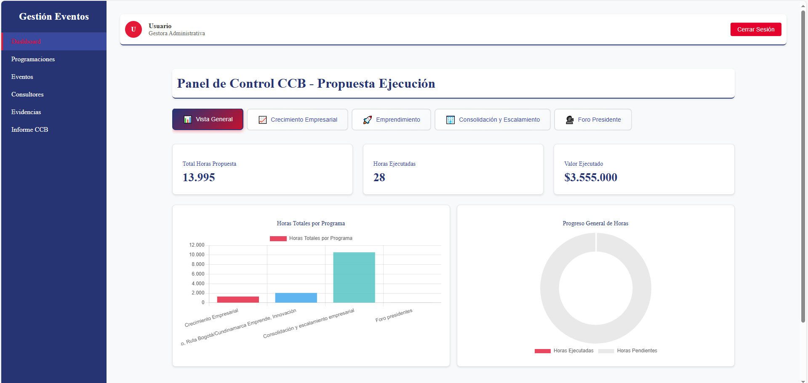
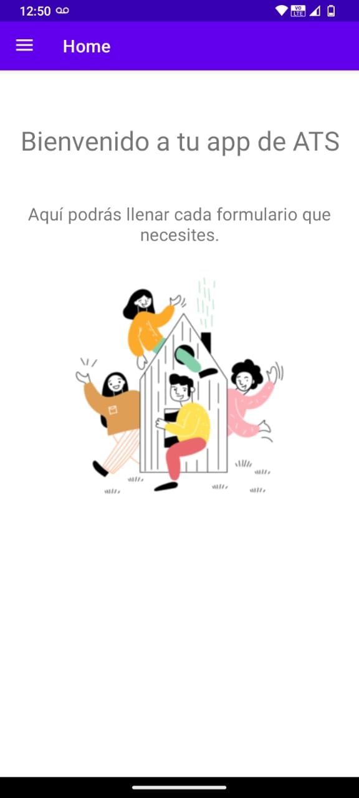
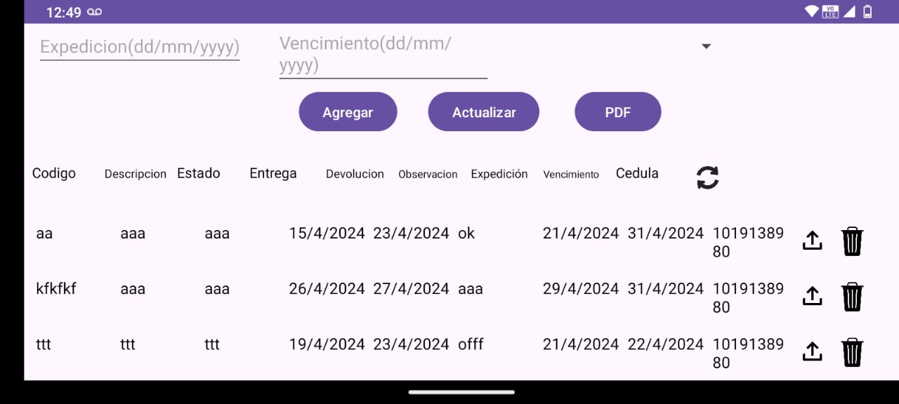
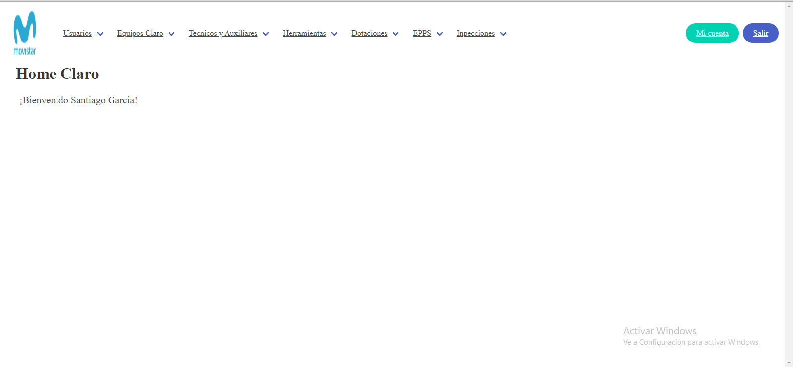
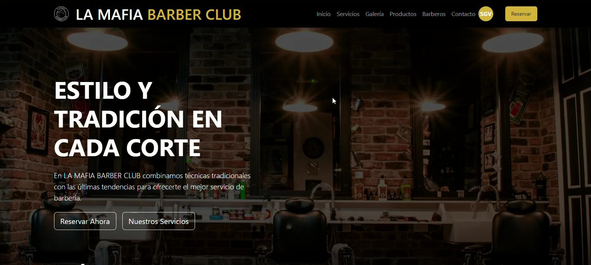
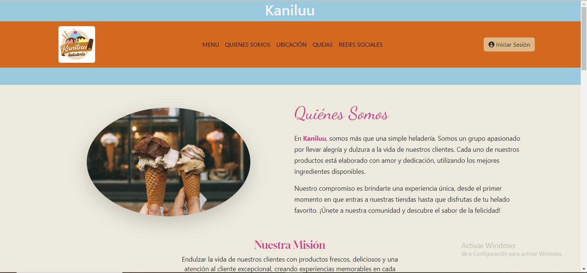

Proyectos
Una selección de trabajos empresariales, personales y académicos
ContractX | IT EXPERTS S.A.S
Plataforma CLM (Contract Lifecycle Management) empresarial basada en microservicios. Lideré el frontend y la integración con múltiples microservicios del backend, aplicando principios avanzados de UI/UX para lograr una plataforma configurable y personalizable por cada cliente.
- Rediseño UI/UX de la plataforma con arquitectura de componentes escalable.
- Integración de endpoints de múltiples microservicios al frontend.
- Pruebas funcionales con Postman para validar contratos de API y flujos de negocio.
- Uso de Claude Code e IA generativa para acelerar el desarrollo.

EventConnect | FuSoft — Uniempresarial
Plataforma web con inteligencia artificial que optimiza la búsqueda, gestión y difusión de eventos empresariales en el observatorio universitario. Integra un motor de búsqueda inteligente por sector, fecha, ubicación o palabras clave, y permite a empresas aliadas administrar sus propios eventos desde un panel exclusivo.
- Motor de búsqueda inteligente por sector, fecha, ubicación o palabras clave.
- Panel exclusivo para empresas aliadas.
- Interfaz centralizada para estudiantes y empresarios.

TaskGo | FuSoft — Uniempresarial
Aplicación móvil y web para automatizar y controlar la información de los profesionales de cualquier empresa mediante tarjeteros digitales. Los empleados se registran en la app y la web permite consultar su información de forma rápida y segura, eliminando registros físicos y evitando pérdidas de datos.
- Tarjeteros digitales para gestión centralizada de profesionales.
- Digitalización de asistencias y evidencias con trazabilidad en tiempo real.
- Generación automática de reportes para auditorías y pagos.

Cámara de Comercio de Bogotá | FuSoft — Uniempresarial
Aplicación web inteligente para optimizar la gestión de consultores en programas de formación empresarial. Digitaliza la selección de consultores con IA, facilita la planificación de actividades, centraliza el registro de evidencias y genera reportes automáticos para validar horas trabajadas.
- Digitalización y automatización de la selección de consultores.
- Planificación eficiente de rutas y actividades.
- Reportes automáticos para auditorías y pagos.

Aplicación ATS | FIBRATELTEC S.A.S
App móvil para la gestión de actividades de los técnicos ATS, permitiendo reportes y seguimiento en campo desde dispositivos móviles.
- Automatización de reportes técnicos.
- Optimización de tiempos de respuesta.

Aplicación Herramientas | FIBRATELTEC S.A.S
Aplicación móvil para la gestión y control de herramientas entregadas a técnicos, con registro de entregas y devoluciones.
- Control eficiente de inventario de herramientas.
- Reducción de pérdidas y extravíos.

Página de Inventarios | FIBRATELTEC S.A.S
Sistema web para la gestión y control de inventarios de equipos y materiales, facilitando el seguimiento y la trazabilidad en tiempo real para técnicos de Claro y Movistar.

La Mafia Barber Club | Cliente independiente
Plataforma web para gestión de reservas de barbería, automatizando el agendamiento de citas y el control de cortes. Redujo el tiempo de gestión de horas a segundos.
- Agendamiento de citas en línea.
- Control de cortes, productos y clientes.

Tienda Online — Fibra Óptica | Proyecto personal
Plataforma e-commerce para la venta de fibra óptica, permitiendo a los usuarios realizar compras y gestionar pedidos en línea.

Inventario Heladería Kanillu | Proyecto académico
Aplicación web para la gestión administrativa de una heladería, controlando inventarios, ventas y generando reportes automáticos.
- Automatización de reportes de ventas.
- Reducción de errores en gestión de inventarios.
No hay proyectos en esta categoría todavía. ¡Pronto!